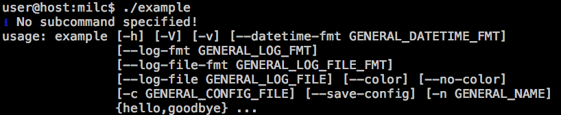
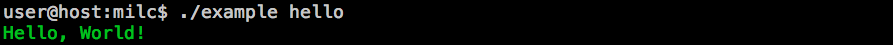
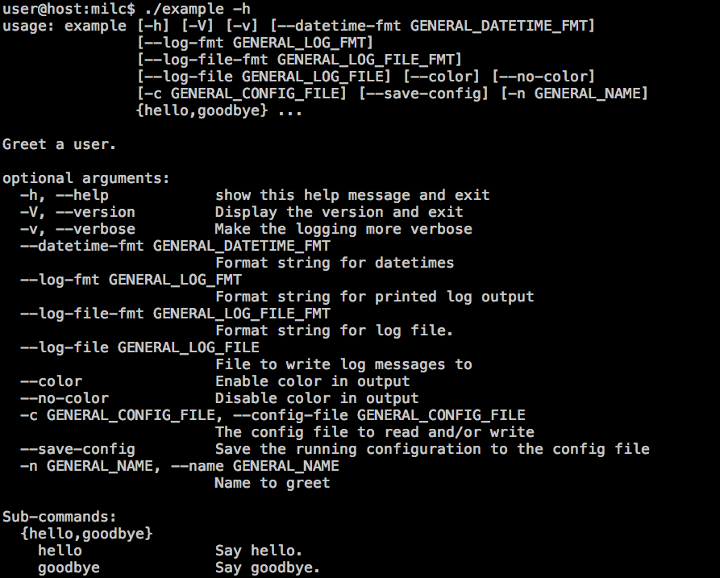
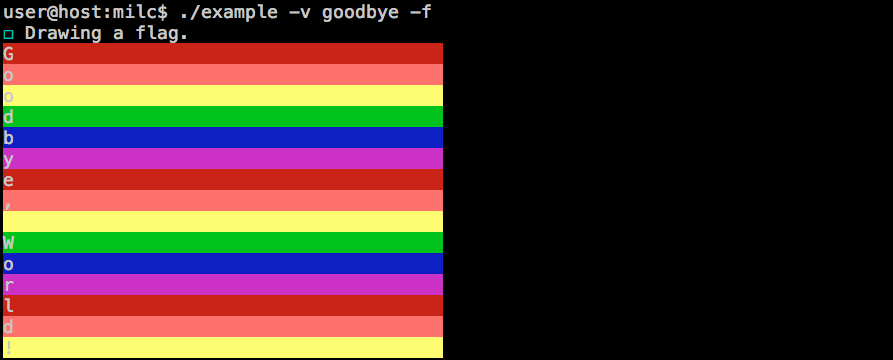

MILC Tutorial¶
MILC is a framework for writing CLI tools. It's goal is to make getting started easy and to grow with your program as it grows. MILC is Batteries Included- it gives you all the functionality that your users demand out of the box. Argument parsing, configuration files, flexible and configurable log output, ANSI colors, spinners, and other nicities are combined into one easy to use module.
Minimal Example¶
MILC works by registering functions as either the entrypoint or a subcommand.
The entrypoint can be thought of as your main(), or the place where program
execution begins. A minimal MILC program looks like this:
#!/usr/bin/env python3
"""Hello World implementation using MILC.
PYTHON_ARGCOMPLETE_OK
"""
from milc import cli
@cli.entrypoint('Greet a user.')
def main(cli):
cli.log.info('Hello, World!')
if __name__ == '__main__':
cli()
Quick Program Overview¶
Before we dive into the features our program is using let's take a look at the general structure of a MILC program. We start by importing the cli object- this is where most of MILC's functionality is exposed and where a lot of important state tracking happens.
Next, we've decorated our main function with cli.entrypoint(). This is how we tell MILC what function to execute and set the help text for our program.
Inside our main() function we print a simple message to the log file, which by default is also printed to the user's screen.
Finally, we execute our cli() program inside the familiar if __name__ == '__main__': guard.
Logging and Printing¶
MILC provides two mechanisms for outputting text to the user, and which one you use depends a lot on the needs of your program. Both use the same API so switching between them should be simple.
For writing to stdout you have cli.echo(). This differs from python
print() in two important ways- It supports tokens for colorizing your text
using ANSI and it supports format strings in the same way as
logging. For writing to
stderr and/or log files you have cli.log. You can use these to output log
messages at different levels so the CLI user can easily adjust how much
output they get. ANSI color tokens are also supported in log messages on the
console, and will be stripped out of log files for easy viewing.
You can still use python's built-in print() if you wish, but you will not
get ANSI or string formatting support.
More information:
Entrypoints¶
MILC does the work of setting up your execution environment then it hands off control to your entrypoint. There are two types of entrypoints in MILC- the root entrypoint and subcommand entrypoints. When you think of subcommands think of programs like git, where the first argument that doesn't start with a dash indicates what mode the program is operating in.
MILC entrypoints are python callables that take a single argument- cli.
When you call cli() at the end of your script it will determine the
correct entrypoint to call based on the arguments the user passed.
Configuration and Argument Parsing¶
MILC unifies arguments and configuration files. This unified config can be
accessed under cli.config. You can access this as attributes or
dictionaries. These two lines are equivalent, and will return True when the
user passes -v or --verbose:
cli.config.general.verbose
cli.config['general']['verbose']
Under the hood MILC uses ConfigParser to read and write configuration files. If you are not familiar with ConfigParser this is a sample config file:
[general]
verbose=true
MILC maps all of the arguments for the root entrypoint into the general section. Subcommand arguments are mapped into their own section. We'll talk about this more when we introduce subcommands, for now you just need to understand that arguments are added to the general section.
Building on our program from earlier we can make our program more flexible
about who it is greeting by adding a new flag, --name, or -n for short:
#!/usr/bin/env python3
"""Hello World implementation using MILC.
PYTHON_ARGCOMPLETE_OK
"""
from milc import cli
@cli.argument('-n', '--name', help='Name to greet', default='World')
@cli.entrypoint('Greet a user.')
def main(cli):
cli.log.info('Hello, %s!', cli.config.general.name)
if __name__ == '__main__':
cli()
One important thing to note is that decorators are processed from the bottom
to the top. You must place @cli.entrypoint directly above the function
definition, and then place any cli.argument() decorators above that to
avoid a stack trace.
More information:
Subcommands¶
A lot of programs use a mode of operation where the first argument that
doesn't begin with - or -- is a subcommand. Popular version control
programs such as git and svn are the most well known example of this
pattern. MILC uses argparser's native subcommand support to implement this
for you. To use it you designate functions as subcommand entrypoints using
cli.subcommand.
Let's extend our program from earlier to use subcommands:
#!/usr/bin/env python3
"""Example MILC program that shows off many features.
PYTHON_ARGCOMPLETE_OK
"""
from milc import cli
@cli.argument('-n', '--name', help='Name to greet', default='World')
@cli.entrypoint('Greet a user.')
def main(cli):
cli.log.info('No subcommand specified!')
cli.print_usage()
@cli.subcommand('Say hello.')
def hello(cli):
cli.echo('{fg_green}Hello, %s!', cli.config.general.name)
@cli.subcommand('Say goodbye.')
def goodbye(cli):
cli.echo('{fg_blue}Goodbye, %s!', cli.config.general.name)
if __name__ == '__main__':
cli()
Configuration and Subcommands¶
Each subcommand gets its own section in the configuration. You can access a
subcommand's config with cli.config.<subcommand>. Options for the root
entrypoint can be found in the cli.config.general section of the config.
We add flags to our subcommands by decorating them with @cli.argument:
@cli.argument('--comma', help='comma in output', action='store_boolean', default=True)
User Controlled Configuration¶
Using the built-in config subcommand our user can permanently set certain
options so they don't have to type them in each time. We do this by adding a
single line to our program, import milc.subcommand.config. Let's take a
look at our final program:
#!/usr/bin/env python3
"""Example MILC program that shows off many features.
PYTHON_ARGCOMPLETE_OK
"""
from milc import cli
import milc.subcommand.config
@cli.argument('-n', '--name', help='Name to greet', default='World')
@cli.entrypoint('Greet a user.')
def main(cli):
cli.log.info('No subcommand specified!')
cli.print_usage()
@cli.argument('--comma', help='comma in output', action='store_boolean', default=True)
@cli.subcommand('Say hello.')
def hello(cli):
comma = ',' if cli.config.hello.comma else ''
cli.echo('{fg_green}Hello%s %s!', comma, cli.config.general.name)
@cli.argument('-f', '--flag', help='Write it in a flag', action='store_true')
@cli.subcommand('Say goodbye.')
def goodbye(cli):
if cli.config.goodbye.flag:
cli.log.debug('Drawing a flag.')
colors = ('{bg_red}', '{bg_lightred_ex}', '{bg_lightyellow_ex}', '{bg_green}', '{bg_blue}', '{bg_magenta}')
string = 'Goodbye, %s!' % cli.config.general.name
for i, letter in enumerate(string):
color = colors[i % len(colors)]
cli.echo(color + letter + ' '*39)
else:
cli.log.warning('Parting is such sweet sorrow.')
cli.echo('{fg_blue}Goodbye, %s!', cli.config.general.name)
if __name__ == '__main__':
cli()
Example Output¶
Now that we've written our program and we have a better idea what is going on, let's explore how it works. We'll start by demonstrating it with no arguments passed.

We'll demonstrate entering a subcommand here:

So far so good. Now let's take a look at the help output:

Finally, let's combine it all together to demonstrate the use of both general and subcommand flags:

Doing More¶
Our program does a lot in only a few lines, but there's a lot more you can do. Explore the rest of the documentation to see everything MILC can do.